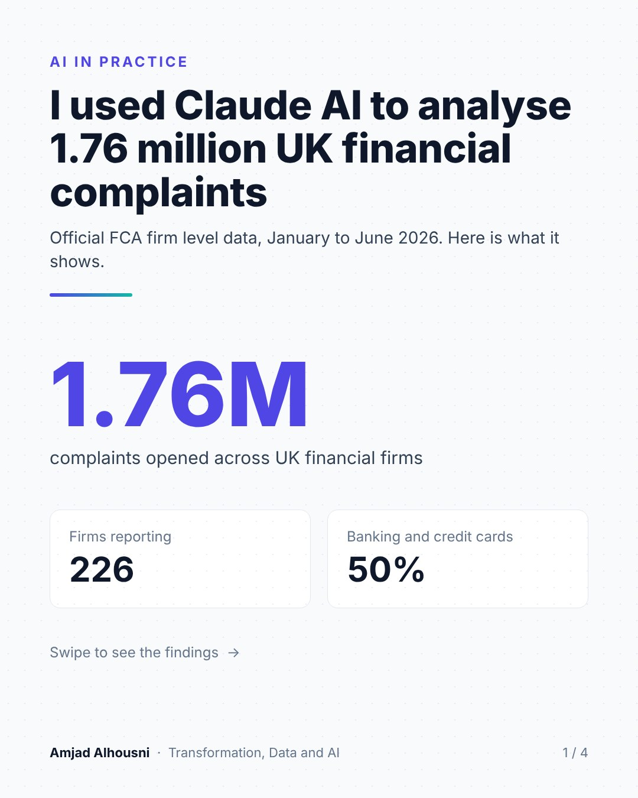
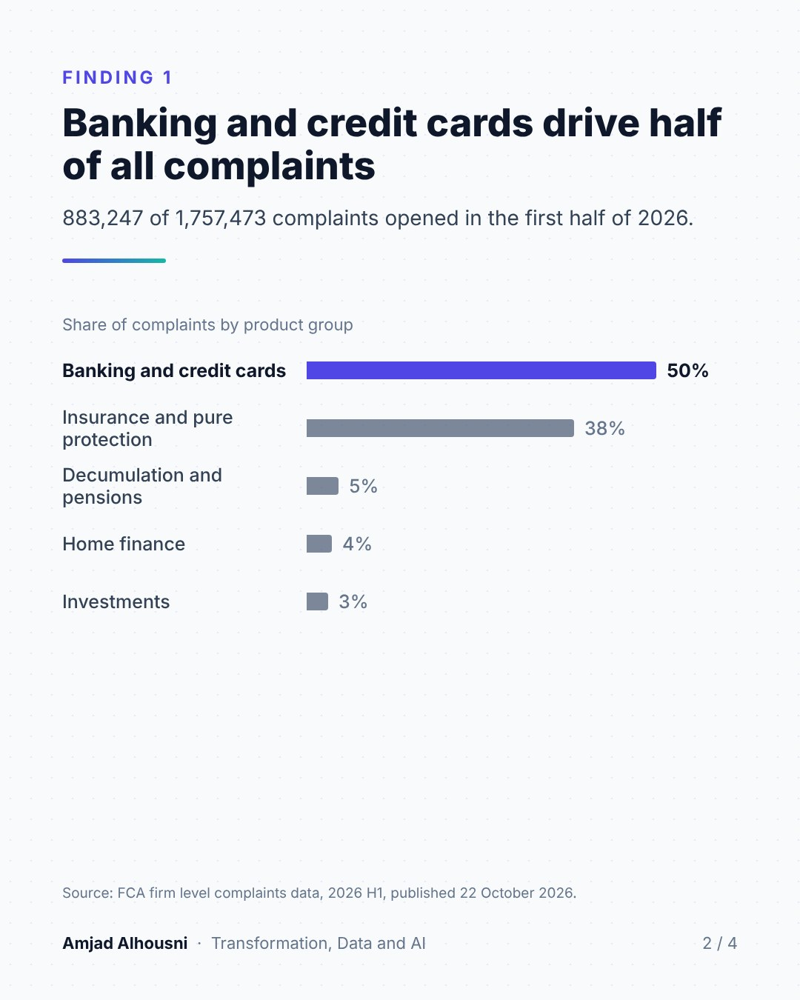
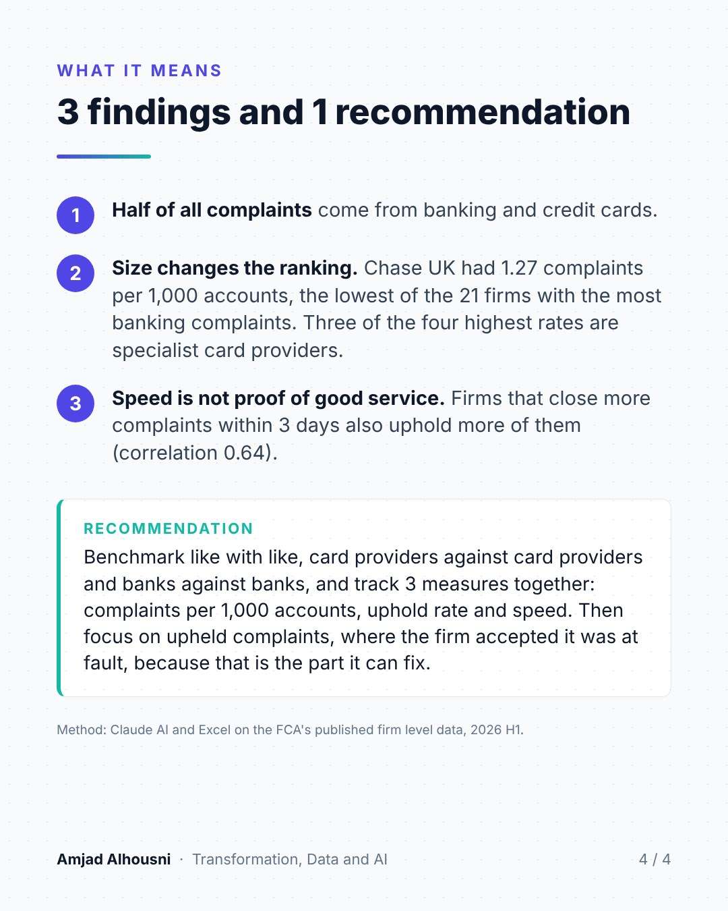

01
The raw material
1.76Mcomplaints opened, January to June 2026
226UK financial firms reporting
50%of complaints from banking and credit cards
Hoursfrom raw FCA data to dashboard and findings, using Claude AI

02
From raw data to dashboard in 4 steps
Step 1
Got the data
Took the FCA’s published firm level complaints data for January to June 2026.
Why: To work on real UK data that anyone can check.
Step 2
Built the dashboard
Used Claude AI and Excel to clean the data and chart complaints by product and by firm.
Why: To see the patterns across 226 firms at a glance.
Step 3
Rebuilt it in code
Wrote SQL queries and Python (Pandas) for volumes, rates per 1,000 accounts, uphold rates and speed.
Why: To prove the numbers hold up and make the analysis repeatable.
Step 4
Turned it into advice
Compared like with like and wrote 3 recommendations a firm can act on.
Why: Because a finding only matters when someone can act on it.
03
3 things the numbers revealed
- 01Half of all complaints come from banking and credit cards: 883,247 of 1,757,473.
- 02Size changes the ranking. Lloyds Bank had the most banking complaints, but Chase UK had the lowest rate of the 21 largest firms, at 1.27 per 1,000 accounts, against 9.62 at Vanquis Bank.
- 03Speed is not proof of good service. Firms that close more complaints within 3 days also uphold more of them (correlation 0.64).

04
What a firm can do with it
- 01Benchmark like with like: card providers against card providers, banks against banks.
- 02Track 3 measures together: complaints per 1,000 accounts, uphold rate and speed.
- 03Focus on upheld complaints, where the firm accepted it was at fault, because that is the part it can fix.

Method: Claude AI, Excel, SQL and Python on the FCA's published firm level complaints data, 2026 H1 (fca.org.uk).
Skills used
Key skills
Data analysisSQLPython (Pandas)Dashboards and KPI reportingBenchmarkingData cleaningInsight to recommendationClaude AI